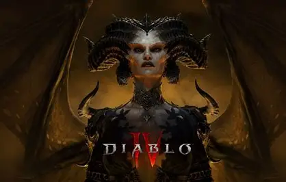
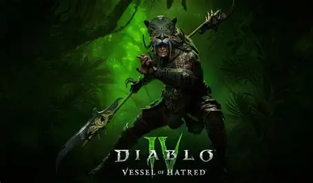
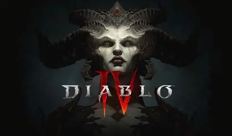

Diablo

Diablo narra a guerra eterna entre os Altos Céus (anjos) e os Infernos Ardentes (demônios). O palco central é Santuário, o mundo dos mortais criado secretamente pela união de um anjo e uma demônia, cujos descendentes (os humanos) possuem poderes latentes chamados Nefalem. A trama dos jogos acompanha a luta contínua da humanidade para impedir que o Lorde do Terror, Diablo, e seus irmãos—Mefisto (Ódio) e Baal (Destruição)—corrompam a Pedra do Mundo, escravizem os mortais e destruam os portões celestiais. A cada era, novos heróis surgem para banir esses males de volta ao inferno, em um ciclo eterno de sacrifício, traição e destruição.

